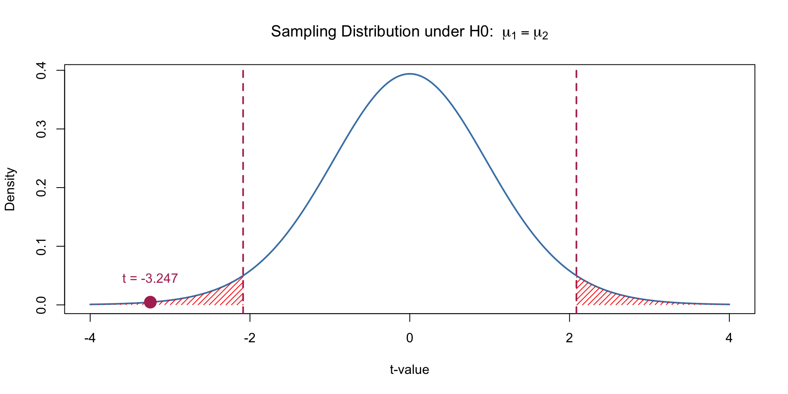

Rows: 7,647
Columns: 29
$ student_level <chr> "p6", "p6", "p6", "p6", "p6…
$ grid_id <chr> "grid_1459", "grid_1459", "…
$ grid_lon <dbl> 100.5767, 100.5767, 100.576…
$ grid_lat <dbl> 13.8444, 13.8444, 13.8444, …
$ school_lon <dbl> 100.4949, 100.4949, 100.494…
$ school_lat <dbl> 13.75991, 13.75991, 13.7599…
$ distance <dbl> 12.90976, 12.90976, 12.9097…
$ area_code <dbl> 10010000, 10010000, 1001000…
$ affiliation <chr> "สพป.กรุงเทพมหานคร", "สพป.กรุ…
$ amphor <chr> "เขตพระนคร", "เขตพระนคร", "…
$ tambon <chr> "ชนะสงคราม", "ชนะสงคราม", "…
$ province <chr> "กรุงเทพมหานคร", "กรุงเทพมหาน…
$ school_type <chr> "อนุบาล-ประถมศึกษา", "อนุบาล-ป…
$ electric <chr> "Y", "Y", "Y", "Y", "Y", "Y…
$ distance_from_district <dbl> 1.0, 1.0, 1.0, 1.0, 1.0, 1.…
$ type_of_hard <chr> "none", "none", "none", "no…
$ hard_to_reach <chr> "ไม่ยุ่งยาก", "ไม่ยุ่งยาก", "ไม่ยุ่ง…
$ school_code1 <dbl> 10010001, 10010001, 1001000…
$ year <dbl> 2017, 2018, 2019, 2020, 202…
$ school_size <chr> "M", "M", "M", "S", "S", "M…
$ location <chr> "URBAN", "URBAN", "URBAN", …
$ ach_score <dbl> 0.1243195, -0.5666060, -0.3…
$ intensity_rcp45 <dbl> 0.1653871, 2.1151603, -0.24…
$ duration_rcp45 <dbl> 0.5498672, 0.5498672, 0.549…
$ frequency_rcp45 <dbl> 0.13786266, 0.53290723, -0.…
$ intensity_rcp85 <dbl> -0.02995965, -0.41886918, -…
$ duration_rcp85 <dbl> -1.1593930, -0.4005176, -0.…
$ frequency_rcp85 <dbl> 0.06299814, -0.19517726, -0…
$ risk_index <dbl> 0.6200137, 0.7404763, 0.715…Week 10: Data Analysis
ผศ.ดร.สิวะโชติ ศรีสุทธิยากร
ภาควิชาวิจัยและจิตวิทยาการศึกษา
คณะครุศาสตร์ จุฬาลงกรณ์มหาวิทยาลัย
precipitation_risk_data.csv
Outline
การวิเคราะห์เพื่อเปรียบเทียบค่าเฉลี่ย
การวิเคราะห์สหสัมพันธ์
การวิเคราะห์การถดถอย
1. Compare Means
การเปรียบเทียบว่ากลุ่มต่าง ๆ มีคุณลักษณะที่สนใจ (ตัวแปรตาม) แตกต่างกันอย่างไร และความแตกต่างดังกล่าวมีนัยสำคัญหรือไม่
การเปรียบเทียบคุณลักษณะดังกล่าวสามารถทำได้หลายมิติ มิติหลักที่นักสถิติมักใช้คือ ค่าเฉลี่ย ซึ่งเป็นแนวโน้มสู่ส่วนกลางของการแจกแจงของตัวแปร
อีกนัยนึงการเปรียบเทียบค่าเฉลี่ยสามารถมองเป็นการวิเคราะห์ความสัมพันธ์ระหว่างตัวแปรเชิงปริมาณกับตัวแปรจัดประเภทก็ได้เช่นเดียวกัน ขึ้นอยู่กับว่าผู้วิเคราะห์จะใช้สารสนเทศในลักษณะใด
Compare Means: Research questions
ความเสี่ยงทางการศึกษาของนักเรียนในแต่ละระดับชั้นมีความแตกต่างกันอย่างไรระหว่างโรงเรียนในจังหวัด กทม. และต่างจังหวัด
ความเสี่ยงทางการศึกษาของนักเรียนชั้น ป.6 ม.3 และ ม.6 ในจังหวัดยะลา มีความแตกต่างกันหรือไม่
ความเสี่ยงทางการศึกษาในจังหวัดนครสวรรค์มีความแตกต่างกันหรือไม่ระหว่างปี 2019 กับ 2017
โรงเรียนขนาดเล็ก กลาง ใหญ่ และใหญ่พิเศษในจังหวัดยะลา มีความเสี่ยงทางการศึกษาที่แตกต่างกันอย่างไร
flowchart LR A[Grouping Variable]-->B[Dependent Variable]
การวิเคราะห์ข้อมูล
Data Visualization + Descriptive Statistics
Statistical Testing/Modelling เช่น t-test, ANOVA หรือ Linear model
Data Visualization + Descriptive Statistics
มีหลายตัว/หลาย combination ที่สามารถนำมาใช้ได้
summary table
boxplot/violin/jitter plot
density plot
histogram/pyramid chart
cumulative distribution function plot (CDF plot)
bar chart/ bar chart + errorbar (ใช้ summary stat มา plot)
กิจกรรม : ความเสี่ยงทางการศึกษาของนักเรียนในแต่ละระดับชั้นมีความแตกต่างกันอย่างไรระหว่างโรงเรียนในจังหวัด กทม. และต่างจังหวัด
ลองสร้างผลการวิเคราะห์เพื่อเปรียบเทียบค่าเฉลี่ย/การแจกแจงของความเสี่ยงทางการศึกษาแบบต่าง ๆ
Independent-Sample
Independent two-sample t-test หรือบางครั้งเรียกว่า “Student’s t-test” ใช้เพื่อเปรียบเทียบค่าเฉลี่ยของตัวแปรต่อเนื่องระหว่างสองกลุ่มอิสระกัน เพื่อดูว่าค่าเฉลี่ยของทั้งสองกลุ่มมีความแตกต่างกันอย่างมีนัยสำคัญทางสถิติหรือไม่
\[ H_0: \mu_1 = \mu_2 \]
flowchart TD
A[Ind. Two-sample]-->B{"Levene's Test"}
B{"Levene's Test"}--"Sig."-->C[Welch's t-test]
B{"Levene's Test"}--"Not Sig."-->D[Student's t-test]
ความเสี่ยงทางการศึกษาของนักเรียนในแต่ละระดับชั้นมีความแตกต่างกันอย่างไรระหว่างโรงเรียนในจังหวัด กทม. และต่างจังหวัด
Independent-Sample
Independent two-sample t-test หรือบางครั้งเรียกว่า “Student’s t-test” ใช้เพื่อเปรียบเทียบค่าเฉลี่ยของตัวแปรต่อเนื่องระหว่างสองกลุ่มอิสระกัน เพื่อดูว่าค่าเฉลี่ยของทั้งสองกลุ่มมีความแตกต่างกันอย่างมีนัยสำคัญทางสถิติหรือไม่
\[ H_0: \mu_1 = \mu_2 \]
flowchart TD A[Ind. Two-sample]-->C[Welch's t-test]
ความเสี่ยงทางการศึกษาของนักเรียนในแต่ละระดับชั้นมีความแตกต่างกันอย่างไรระหว่างโรงเรียนในจังหวัด กทม. และต่างจังหวัด
การเรียกใช้ function นอก tidyverse เราสามารถใช้
with()เป็นตัวเชื่อมต่อ pipeline ได้ตัวอย่างด้านล่างมีการใช้
with()เพื่อให้สามารถเรียกฟังก์ชันt.test()โดยอ้างอิงถึงตัวแปร risk_index และ group_province จากข้อมูลที่ถูกสร้างและจัดการผ่าน mutate() ใน pipeline ก่อนหน้า
data |>
mutate(group_province = ifelse(province == "กรุงเทพมหานคร", "Bkk","Other")) |>
with(t.test(risk_index ~ group_province,
alternative = c("two.sided"), ## type of hypothesis
var.equal = FALSE)) ## Choose Welch's t-test
Welch Two Sample t-test
data: risk_index by group_province
t = -15.912, df = 148.17, p-value < 2.2e-16
alternative hypothesis: true difference in means between group Bkk and group Other is not equal to 0
95 percent confidence interval:
-0.2647798 -0.2062803
sample estimates:
mean in group Bkk mean in group Other
0.3203879 0.5559179 ผลการทดสอบนัยสำคัญที่ได้เป็นอย่างไร
Independent-Sample
t-test มีข้อสมมุติเบื้องต้นของการทดสอบดังนี้
-
Normality
- Histogram, Density plot - Q-Q plot - Shapiro-Wilk Test and More... -
Homogeneity of Variances
- Histogram, Density plot - Descriptive Statistics - Levene's Test and More... Independence
Independent-Sample
t-test มีข้อสมมุติเบื้องต้นของการทดสอบดังนี้
-
Normality
- Histogram, Density plot - Q-Q plot - Shapiro-Wilk Test and More... -
Homogeneity of Variances- Histogram, Density plot - Descriptive Statistics - Levene's Test and More... Independence
Independent-Sample: p-value
two-tailed p-value
\[ p\text{-value} = 2 \times P(T \geq |t_{\text{obs}}|) \]
one-tailed p-value
\[ p\text{-value} = P(T \geq t_{\text{obs}}) \]
ภายใต้ H0 เป็นจริง ความแตกต่างที่พบอย่างน้อยนี้มีโอกาสเกิดขึ้นมากแค่ไหน
หลายคนมักจะเข้าใจผิดว่า p-value คือความน่าจะเป็นที่สมมติฐานศูนย์เป็นจริงหรือไม่จริง ซึ่งไม่ถูกต้อง p-value บอกเพียงว่า ถ้าสมมติฐานศูนย์เป็นจริง โอกาสที่จะเห็นผลลัพธ์สุดโต่งเท่าที่สังเกตได้เป็นเท่าใด

Paired-Sample
การทดสอบ Paired-Sample t-test หรือ Dependent t-test ใช้สำหรับการเปรียบเทียบค่าเฉลี่ยของสองชุดข้อมูลที่สัมพันธ์กัน ซึ่งหมายถึงข้อมูลที่ถูกวัดสองครั้งในกลุ่มเดียวกัน ตัวอย่างเช่น เปรียบเทียบคะแนนสอบก่อนและหลังการเรียนการสอนในกลุ่มนักเรียนกลุ่มเดิม หรือการวัดผลก่อนและหลังการให้การรักษาในผู้ป่วยกลุ่มเดียวกัน
ความเสี่ยงทางการศึกษาในจังหวัดนครสวรรค์มีความแตกต่างกันหรือไม่ระหว่างปี 2019 กับ 2017
t.test(..., paired = TRUE)
“If paired is TRUE then both x and y must be specified and they must be the same length. Missing values are silently removed (in pairs if paired is TRUE). If var.equal is TRUE then the pooled estimate of the variance is used. By default, if var.equal is FALSE then the variance is estimated separately for both groups and the Welch modification to the degrees of freedom is used.””
data |>
filter(province == "นครสวรรค์",
year %in% c(2017,2019)) |>
select(school_code1, year, risk_index) |>
pivot_wider(names_from = "year", values_from = "risk_index", names_prefix = "year_") |>
drop_na() |>
with(t.test(x = year_2019, y = year_2017,
paired = T,
alternative = "less"))
Paired t-test
data: year_2019 and year_2017
t = 17.889, df = 403, p-value = 1
alternative hypothesis: true mean difference is less than 0
95 percent confidence interval:
-Inf 0.2247686
sample estimates:
mean difference
0.2058023 Independent Many-Sample
- โรงเรียนขนาดเล็ก กลาง ใหญ่ และใหญ่พิเศษในจังหวัดยะลา มีความเสี่ยงทางการศึกษาที่แตกต่างกันอย่างไร
flowchart TD
A["Many-Sample"]-->B[F-test]
B{F-test}--"Sig."-->C["Multiple Comparison"]
B{F-test}--"Not Sig."-->D[Stop]
FWER
Family-Wise Error Rate (FWER) คือความน่าจะเป็นที่จะเกิด Type I error (false positive) อย่างน้อยหนึ่งครั้งในการทดสอบสมมติฐานหลายครั้ง (multiple comparisons)
\[ FWER = P(at \ least \ one \ Type \ I \ Error) = 1 - P(no \ Type\ I \ error) = 1 - (1-\alpha)^m \]
Bonferroni: คูณ p-value ด้วยจำนวนการทดสอบ
Holm: Step-Down procedure
Hochberg
Hommel
FDR
False Discovery Rate (FDR) คืออัตราส่วนของ false positives (Type I errors) ต่อจำนวนการปฏิเสธสมมติฐานศูนย์ทั้งหมด (ทั้งที่เป็น false positives และ true positives) ในการทดสอบหลายครั้ง (multiple comparisons)
Benjamini-Hochberg (BH)
Benjamini-Yekutieli (BY)
Holm
ขั้นตอนของ Holm’s Method (Step-down Procedure)
เรียงลำดับค่า p-value จากน้อยไปมาก:
กำหนด \(p_1, p_2, \dots, p_m\) เป็นค่า p-value จากการทดสอบ \(m\) ครั้งที่เรียงลำดับจากเล็กไปใหญ่ โดยที่ \(p_1\) คือค่า p-value ที่เล็กที่สุด และ \(p_m\) คือค่า p-value ที่ใหญ่ที่สุด-
เปรียบเทียบค่า p-value แต่ละค่า กับระดับนัยสำคัญที่ปรับแล้ว:
สำหรับแต่ละการทดสอบ i (จาก 1 ถึง \(m\)) เปรียบเทียบค่า p-value \(p_i\) กับระดับนัยสำคัญที่ปรับแล้ว \(\frac{\alpha}{m-i+1}\) โดยที่:- \(\alpha\) = ระดับนัยสำคัญที่กำหนด (เช่น 0.05)
- \(m\) = จำนวนการทดสอบทั้งหมด
- \(i\) = ลำดับของค่า p-value
-
ปฏิเสธสมมติฐานศูนย์ (H₀):
- เริ่มจากค่า p-value ที่เล็กที่สุด (\(p_1\)) ถ้า \(p_1 \leq \frac{\alpha}{m}\) ให้ปฏิเสธสมมติฐานศูนย์
- ทำขั้นตอนเดียวกันสำหรับ \(p_2, p_3, \dots\) โดยเปรียบเทียบค่า p-value ถัดไปกับระดับนัยสำคัญที่ปรับแล้ว
- ถ้าพบค่า p-value ที่ไม่เล็กกว่าระดับนัยสำคัญที่ปรับแล้ว ให้หยุดและไม่ปฏิเสธสมมติฐานศูนย์ในค่าถัดไป
สิ้นสุดการทดสอบ:
หลังจากที่ค่า p-value ใดๆ ไม่ผ่านระดับนัยสำคัญที่ปรับแล้ว ให้หยุดการทดสอบและไม่พิจารณาค่า p-value ถัดไป
Benjamini-Hochberg Algorithm
เรียงลำดับ p-value จากน้อยไปมาก
คำนวณค่า FDR-adjusted p-values (เกณฑ์การตัดสินใจ) ของ p-value แต่ละค่า ให้ \(q_i\) คือเกณฑ์การตัดสินใจของ p-value ตัวที่ i จะได้ว่า \(q_i = \frac{i}{m} \times \alpha\)
หาค่า p-value ที่มากที่สุดที่น้อยกว่า \(q_i\) ค่าที่อยู่ในเกณฑ์นี้จะสรุปว่า reject H0

week 10: 2758615 Essential Competencies for Programming in Educational Data Analysis
ผศ.ดร.สิวะโชติ ศรีสุทธิยากร